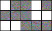
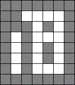
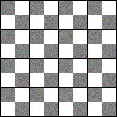
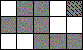
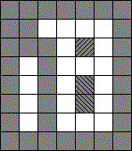
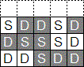
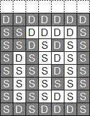
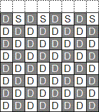

| Source file: | fax.{c, cpp, java, pas} |
| Input file: | fax.in |
| Output file: | fax.out |
|  |  |  |
| Fax 1 | Fax 2 | Fax 3 |
A fax image is a rectangular array of dark and white pixels. Three small examples are shown above much magnified so individual pixels are clearly visible. Your task is to write a program that will count the connected dark components in fax images. We assume that two dark pixels that are directly adjacent vertically or horizontally are in the same component. Pixels along a diagonal, touching only at a corner, are not directly connected. The two components in Fax 1 and three components in Fax 2 are shown below in different shadings. In Fax 3, all 32 dark pixels are in separate components, because the dark pixels only touch at corners.
|  |  |
| Fax 1 Components | Fax 2 Components |
Fax images are encoded to save transmission bandwidth. If you imagine a blank row above the actual fax, then each pixel in the fax can be labeled as being the same (S) as the pixel above it or different (D) from the pixel above it, as illustrated below.
|  |  |  |
| Fax 1 | Fax 2 | Fax 3 |
If the S and D labels are read in row major order (from left to right across rows and then down to further rows), then the labels for the pixels in the three faxes are
Fax 1: SDDSDDSSSDDDSDD
Fax 2: DDDDDDDSSDDDDSSSDSDSSSDSSDSSSSSSDSSSSSSSSSSSSSDSSSDSDDDS
Fax 3: DSDSDSDSDDDDDDDDDDDDDDDDDDDDDDDDDDDDDDDDDDDDDDDDDDDDDDDDDDDDDDDD
If we count the repetitions, always starting with S’s (even if there are 0 S’s at the beginning), then we get
Fax 1: 1S 2D 1S 2D 3S 3D 1S 2D
Fax 2: 0S 7D 2S 4D 3S 1D 1S 1D 3S 1D 2S 1D 6S 1D 13S 1D 3S 1D 1S 3D 1S
Fax 3: 0S 1D 1S 1D 1S 1D 1S 1D 1S 56D
Since the runs of S and D always alternate, we can omit the S and D labels, and get the final encodings.
Fax 1: 1 2 1 2 3 3 1 2
Fax 2: 0 7 2 4 3 1 1 1 3 1 2 1 6 1 13 1 3 1 1 3 1
Fax 3: 0 1 1 1 1 1 1 1 1 56
Starting from fax widths and encodings, your task is to calculate the number of components in the faxes. To make things more interesting, the faxes may be very large.
There are from one to 24 data sets, followed by a final line containing only -1. A data set starts with a line containing three integers w, r, and g: the width of the fax in pixels, the total number of runs, and the number of run lengths grouped on one line, respectively. All three numbers are positive: w ≤ 1,000,000,000, r ≤ 1000, and g ≤ 40. The rest of the dataset consists of r run lengths, with a new line starting after each group of g run lengths. The last line (possibly the only line) of run lengths may contain fewer than g run lengths. The numbers on each line are blank separated. The first run length may be 0. All others run lengths are positive. No run length may be greater than 1,000,000,000. The total number of pixels in each fax will be a multiple of w, so the pixels form a rectangle. Though commas are shown in the long numbers above for human readability, the integers in the input and output files include no commas.
For each dataset the output contains a line with one integer:
the number of components in the fax.
No fax encoded in the input will have more than 1,000,000,000
components. Caution: a solution that examines each
pixel
individually will not finish within the one-minute time limit.
| Example input: | Example output: |
|
5 8 4 1 2 1 2 3 3 1 2 7 21 8 0 7 2 4 3 1 1 1 3 1 2 1 6 1 13 1 3 1 1 3 1 8 10 10 0 1 1 1 1 1 1 1 1 56 -1 |
2 3 32 |
Last modified on October 24, 2003 at 11:25 AM.